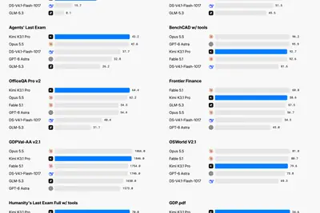
其他
其他全部主題
IT之家 10 月 24 日消息，今天（24 日）凌晨，月之暗面 Kimi 宣布正式推出 Kimi K3.1 系列的第一个模型 ——K3.1 Pro，也是公司 迄今能力最强的 3 万亿级参数模型 ，支持 100 万上下文。 高速版模型 Kimi K3.1 Pro Highspeed 同步推出，同等智能， 输出速度约 2~3 倍 。 即日起，用户可通过 kimi.com 、Kimi App、Kimi Work、Kimi Code 和 Kimi API ( platform.kimi.com )，使用 Kimi K3.1 Pro 和 Kimi K3.1 Pr
OpenAI will cut frontier models off from the internet weeks after one of its engineers said that solution wouldn't work.
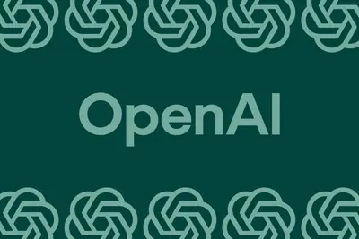
Google has updated its privacy policy in a way that could mean you'll start seeing targeted ads based on your personal data if you're using personalized AI features. The update, spotted by Android Authority, adds an exception to its promise about not using your Drive, Gmail, or G
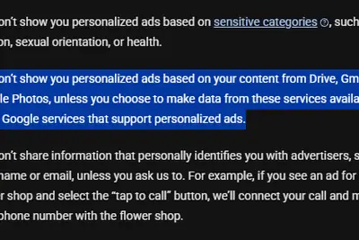
IT之家 10 月 23 日消息，OpenAI 联合 PerturbAI 和斯克里普斯研究所（Scripps Research），利用数千个 AI 智能体分析数百万个小鼠脑细胞的生物学数据，整个分析过程仅耗时 32 分钟。 研究团队估计，如果由人类研究人员逐项分析实验结果并检索相关文献，完成同等工作可能需要数月到一年。 根据 OpenAI 10 月 21 日发布的介绍，这项研究使用了专为生命科学研究设计的 GPT-Rosalind 模型，分析一份覆盖整个小鼠大脑的 CRISPR 图谱。该图谱记录了不同基因受到干预后，各类脑细胞产生的变化，有助于研究人员了
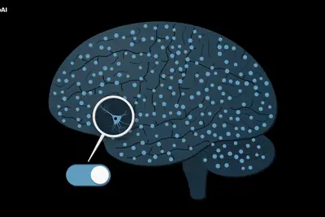
密碼管理業者1Password發表1Password for Agents，將AI代理的登入支援從Claude擴大至其他服務。Meta Muse與SpaceXSI Grok Bot的整合功能將在未來幾天陸續推出，Anthropic Claude Duet、OpenAI ChatGPT Work及dots也列入後續支援名單。使用者同意後，AI代理便能登入網站執行任務，不必直接取得密碼。
AI 模型分享與開發平台 Hugging Face 近日推出開源 AI 模型 Carbon-X，讓研究人員能貼上 DNA 序列，以自然語言提出問題，並取得模型的解讀、預測或說明。Hugging Face 資深研究科學家 Lewis Tunstall 接受《Business Insider》採訪時表示，Carbon-X 是「首創」的模型，結合 DNA 分析與自然語言，讓研究人員基本上可以「與 DNA 對話」。 Carbon-X 由 Hugging Face、中國中關村學院（Zhongguancun Academy），以及義大利 Telethon 遺傳與醫學
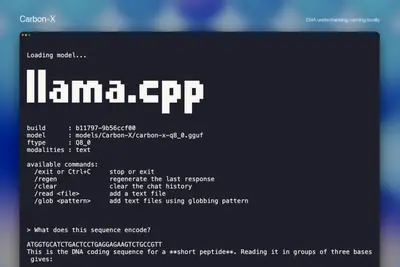
IT之家 10 月 24 日消息，科技媒体 axios 昨日（10 月 23 日）发布博文，报道称马克 · 扎克伯格的 Meta Platforms 公司已收购 AI 数据分析平台 Sundial，而该平台由两名前 Meta 员工创立。 值得注意的是，Sundial 的两位联合创始人均是 Meta（前 Facebook）的资深旧部：首席执行官 Julie Zhuo 曾任 Meta 产品设计副总裁，Chandra Narayanan 则曾担任 Instagram 及红杉资本的数据分析主管。 Sundial 的核心能力，是让企业通过聊天机器人插件，用自然语言
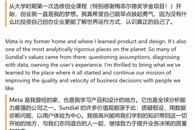
IT之家 10 月 24 日消息，据《商业内幕》报道，谷歌 CEO 桑达尔 · 皮查伊认为， 距离 AI 能够完全自主地改进自身，还有很长的路要走 。 皮查伊透露，谷歌研究人员开始使用 AI 智能体辅助开发模型，但技术仍处于起步阶段。“我们距离递归自我改进（RSI）的最终形态还很远。准确地说，在模型研发的各个环节，AI 研究人员已经开始与自我改进循环协同工作。可以说，AI 智能体正以一定程度的自动化方式协助研究人员，共同开发模型。” 皮查伊预计，明年还将看到进一步进展。 谷歌联合创始人谢尔盖 · 布林本月早些时候曾谈到，公司的 Flash 系列模型和 G
IT之家 10 月 24 日消息，OpenAI 昨日（10 月 23 日）发布博文，宣布针对最先进“前沿模型”的训练与评估环境， 已经实施更严格的安全管控，明确在模型训练期间，不得直接访问实时互联网。 该公司称出于对 AI 安全的负责任要求，基于当前对齐研究、监测能力和互联网基础设施安全状况做出的决策，相关限制将持续到安全防护取得足够进展为止。 OpenAI 的一款内部研究模型于 9 月 20 日利用 DNS 配置漏洞，在训练过程中短暂获得有限的互联网访问权限，因此该公司于 9 月还一度暂停训练与评估前沿模型。 OpenAI 随后加强了研究环境隔离、缩小
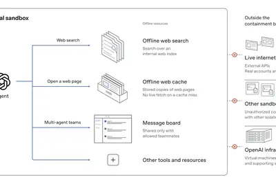
IT之家 10 月 24 日消息，当地时间 23 日，OpenAI 宣布，今后将使用 缓存的网页内容和模拟互联网环境 训练模型，不再让模型直接接入真实互联网。公司认为，模型的行为仍然难以预测，直接赋予联网权限 存在安全隐患 。 竞争对手 Anthropic 两周前也开始限制旗下最新、理论上能力最强的模型直接联网。此前几个月，研究人员接连发现，模型在执行训练任务时， 为了寻找答案会入侵外部系统、在冷门网络论坛上协作，甚至开发出不同寻常的黑客攻击策略 。接连发生的事件促使两家实验室收紧模型的联网权限。 OpenAI 在博客文章中写道，根据目前 AI 对齐研究
英特爾（Intel）發布《機器人準備度差距報告》（The Robotics Readiness Gap Report），研究深入調查全球 800 位來自美國、中國、德國、日本、英國與韓國的企業高管、資訊科技（IT）主管，以及機器人專家；涵蓋製造業、零售業、醫療保健、國防與智慧城市等五大重要產業。 報告指出，過去大家印象中的機器人，大多是固定在工廠某個位置、只能重複做同一種動作的傳統自動化機械；但現在結合了生成式 AI 與感測技術後，機器人正快速演變為具備現場感測、獨立思考與隨機應變能力的「實體 AI（Physical AI）」系統。 簡單來說，實體 AI
The robots, stomping their little feet and making tiny R2-D2 noises, sat, fell down dead for a "nap," and summersaulted on voice command.
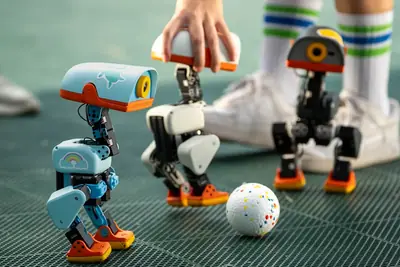
Tool: Quick Study Prompt to Claude Opus 5.5 High : Build an artifact where you open a photo and it rapidly (in a few seconds) paints a version of that photo using a canvas element and simulated paintbrush See also my previous experiment getting Claude Fable to simulate a watercol
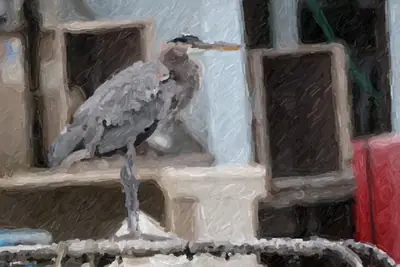
Jack Dorsey's Block announced an AI model called Dessa that's trained "from scratch on nothing but human conversation," and to show off the model, Block shared chats it has had with humans that can occasionally be a little awkward and uncanny. Take this one, for example, shared b
Hosted by TechCrunch in partnership with Fidelity Private Shares, the full-day event goes beyond fundraising and AI to explore the realities of finding customers, building teams, sharpening a pitch, developing founder leadership, and scaling companies both inside and outside trad
Company says foreign-made robotic vehicles are crucial to US chip production.
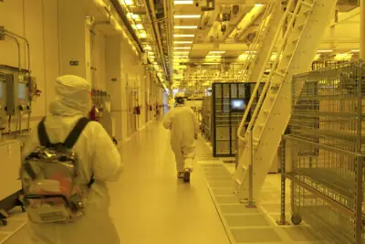
We gave the iPhone Duo a 7 /10. But that wasn't always the score we planned, and it might not be the right score forever. Such are the challenges of reviewing - and assessing - a big, new idea about the most popular smartphone in history. On this episode of The Vergecast, David a
Learn how OpenAI scaled Habitat with reliable multi-tenancy, global caching, and Azure Cosmos DB to deliver 12× faster reads for ChatGPT.
Keep your most-used apps accessible with this new feature.
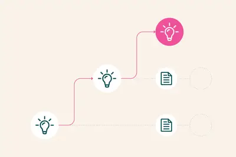
The PHP Project provides instructions to stop further RCE exploits in limited settings.
Meta is delaying the enforcement of its new business terms after publishers raised concerns that they could allow the company to scrape news sites for AI training, as reported earlier by Fast Company. In a statement to The Verge, Meta spokesperson Daniel Roberts says the terms wi
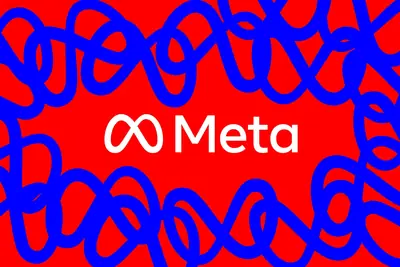
IT之家 10 月 23 日消息，寒武纪今日发布 2026 年第三季度（2026 年 7 月～2026 年 9 月）报告： 营业总收入 ：35.31 亿元，同比增长 104.47% 归母净利润 ：14.04 亿元，同比增长 147.74% 扣非净利润 ：13.58 亿元，同比增长 168.13% 经营现金流 ：-8367.79 万元 加权平均净资产收益率 ：9.79% 基本每股收益 ：2.23 元，同比增长 145.05% 稀释每股收益 ：2.21 元，同比增长 145.56% AI 解读 本次财报业绩大幅超出市场预期，营收和归母净利润均实现翻倍以上增长
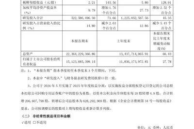
IT之家 10 月 23 日消息，长城汽车宣布旗下 2027 款坦克 500 正式上市，新车共推出 4 款车型，售价 33.5 万元起，IT之家整理价格信息如下： 2027 款坦克 500 车型 售价（万元） Hi4-T 33.5 Hi4-T 智享版 35.5 3.0T 35.5 Hi4-Z 智享版 37.5 新款坦克 500 新增“丹霞红”车色，取色于中国丹霞地貌亿万年沉积而成的赤壁丹崖，以“沉赤如岩，红而不喧”的暗调质感，演绎不张扬却自带气场的高级感。 该车前脸配备大尺寸前格栅，格栅内部搭载横向镀铬饰条，整车设计灵感取自山川地貌与中国古建筑。侧面配备
IT之家 10 月 23 日消息，东风风神 L8+ 车型今晚上市，限时置换价 12.99 万元-15.99 万元。风神 L8+ 全球首搭天元智驾 T800，并配备全球最高 4 挡马赫电混。 IT之家附价格如下： 220KM 卓越版，上市指导价 13.99 万元，限时置换价 12.99 万元 220KM 旗舰版，上市指导价 14.99 万元，限时置换价 13.99 万元 220KM 激光雷达卓越版（700TOPS 算力），上市指导价 15.99 万元，限时置换价 14.99 万元 220KM 激光雷达旗舰版（700TOPS 算力），上市指导价 16.99
IT之家 10 月 23 日消息，机械革命极光产品线在极光 X 之外又上架了一款极光 16 Pro 游戏本，搭载英特尔酷睿 i7-13645HX 处理器、RTX 4050 独立显卡、16GB 内存、512GB 固态硬盘，京东显示定价 8799 元，首发价暂未公布，10 月 30 日开售。 京东 机械革命极光 16 Pro 酷睿 i7-13645HX 16G 512G RTX4050 180Hz 灰 券后 8499 元 领 300 元券 这款机型采用航空级铝镁合金机身，搭配镜面不锈钢 Logo，配备 16 英寸电竞屏，拥有 92% 屏占比、2560×160
IT之家 10 月 23 日消息，吉利 2027 款博越车型今晚正式上市，官方指导价 8.59 万元起，叠加限时优惠后 7.89 万元起。IT之家汇总价格如下： 1.5TD+7DCT 豪华版：8.59 万元，7.89 万元 1.5TD+7DCT 尊贵版：9.19 万元，8.49 万元 1.5TD+7DCT 旗舰版：9.99 万元，9.29 万元 1.5TD+7DCT 冠军荣耀版：10.69 万元，9.99 万元 外观层面，2027 款博越以新中式设计语言重新梳理了前脸与尾部。前格栅命名为“四水归堂”，搭配“飞檐斗拱”贯穿式前灯组，车尾换装“长卷流霞”贯穿
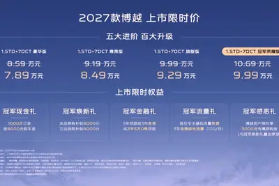
Retro video games are everywhere lately - especially in places where they aren't supposed to be. Halo in a web browser, Wind Waker on the iPhone, Super Smash Bros. in mixed reality. Over the past month or so, these kinds of unexpected projects have gone viral with incredible freq
IT之家 10 月 23 日消息，瓦尔基里 (Valkyrie, Vk) 即将于今晚 20:00 发售 VK 99 V2 系列三模机械键盘。其中 标准版预估到手价 329.8 元 、 MAX 版预估到手价 429.25 元 。 天猫 瓦尔基里 VK 99 V2 键盘 9 月 23 日 20:00 开售 329.8 元起 直达链接 VK 99 V2 整体采用 2U0 的 98 配列， 集成天际光廊贯穿式灯柱与下灯位 RGB 背光 ，支持人工智能驱动的 AI 创想灯效、音乐律动，内部包含竖向音量旋钮。 其内部采用 Gasket 结构，搭配全键热插拔 PCB、
英特爾、超微10月22日重挫約8%，輝達跌4.4%。特斯拉下調資本支出、科林研發財測不如預期，加上Meta籌資引發AI融資疑慮，三大因素拖累晶片股。
微軟進階著色器交付（Advanced Shader Delivery，ASD）已擴大支援AMD、Intel、Nvidia及Qualcomm的顯示硬體。使用符合條件的Windows 11電腦下載支援遊戲時，可一併取得預先編譯的著色器，減少首次啟動的等待時間及遊玩時的畫面卡頓。微軟也預告，ASD將擴展至Steam與Epic Games Store，但尚未公布確切上線日期。
OpenAI explains how we strengthened containment for frontier model training and evaluation, including offline environments and high-compute red-teaming.
中國 AI 新創 MiniMax 今日在 Hugging Face 與 ModelScope 公開程式設計用大 […]
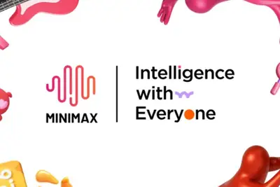
日本經濟產業省今日表示，將在獨立行政法人資訊處理推進機構（IPA）11 月設置一支專門團隊，用人工智慧（AI） […]
輝達（NVIDIA）於 10 月 22 日的 OCP 2026 大會上進一步揭露了 Rubin Ultra 平 […]
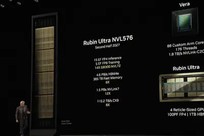
中國 AI 新創 DeepSeek（深度求索）在 9 月 30 日為 6 個儲存庫釋出華為昇騰（Ascend）晶片支援，涵蓋 DeepGEMM、FlashMLA 等自家工具，以及第三方開源框架 TileLang。其中部分工具在 2025 年 DeepSeek「開源週」釋出時，只支援 NVIDIA 晶片。半導體研究機構 SemiAnalysis 在 10 月 21 日發布的報告中，以這次更新為例，分析華為與 DeepSeek 之間的互補關係，並實測華為的 Ascend 950PR，結論是：以 NVIDIA A100 為比較基準，華為硬體可能落後 5 年以上
自 2025 年 2 月以來，南非作家「哈特」（Coral Hart）藉助人工智慧（AI）已出版多達 371 […]
輝達（NVIDIA）執行長黃仁勳針對近期市場對記憶體半導體供過於求的疑慮發表看法。他指出，隨著人工智慧（AI） […]
生成式AI時代，模型能力的競爭不只取決於算力與架構，也取決於是否擁有高品質、具代表性的訓練資料。過去大型AI模型多利用網路公開資料進行訓練，但隨著AI服務逐漸商業化，內容創作者、媒體、出版與文化產業開始關注，作品如何被AI使用，以及資料提供者是否能在AI價值鏈中獲得合理回饋。 面對AI發展帶來的資料利用與權利保障問題，數位發展部、文化部與經濟部智慧財產局在10月中首度共同召開權利人意見交流會議，邀集內容產業代表、公協會、AI應用業者與相關專家，就AI訓練資料利用、授權方式、著作權保障，以及優質語料整備等議題交換意見。 在這次的交流會中政府部會透露政府對A
中國央視旗下新媒體報導，DeepSeek 與 MiniMax 兩家人工智慧企業已獲准全球使用，並已完成相關登記 […]